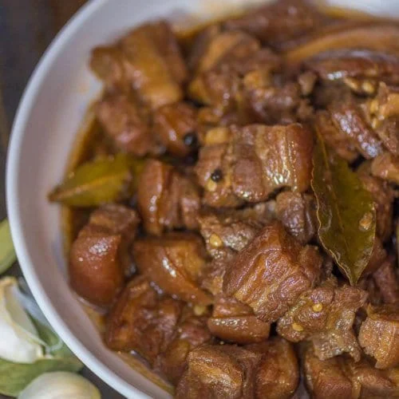

Adobo

Description
This Filipino dish is my favorite because it includes a combination of sweet, salty, sour and, savory flavor that pack a punch and will leave you wanting more.
Ingredients
- 2 lbs pork belly
- 2 tbsp garlic (minced or crushed)
- 5 dried bay leaves
- 4 tbsp vinegar
- 1/2 cup soy sauce
- 1 tbsp peppercorn
- 2 cups water
- salt to taste
Steps
- Combine the pork belly, soy sauce, and garlic then marinade for at least 1 hour
- Heat the pot and put-in the marinated pork belly then cook for a few minutes
- Pour remaining marinade including garlic
- Add water, whole pepper corn, and dried bay leaves then bring to a boil. Simmer for 40 minutes to 1 hour
- Put-in the vinegar and simmer for 12 to 15 minutes
- Add salt to taste
- Serve hot. Share and enjoy!